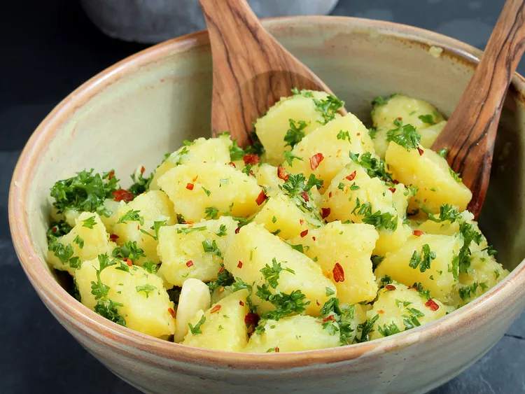

Patate Prezzemolate
Description:
This is a classic Italian potato salad that can be found on tables from the north to the south. Meaning "parsley potatoes", you'll find Patate Prezzemolate everywhere in Italy: formal luncheons, family get-togethers, weeknight dinners, and even in school cafeterias. Buon appetito!
Ingredients
- 25 ounces Yukon Gold potatoes
- 1 tablespoon coarse sea salt
- 4 tablespoons extra-virgin olive oil, divided
- 1 tablespoon white wine vinegar
- 2 cloves garlic, peeled and slightly crushed
- 2 green onions (white part only), chopped
- ½ cup very finely chopped flat-leaf parsley
- salt and freshly ground black pepper to taste
- 1 teaspoon red pepper flakes (Optional)
Directions
Step 1
Combine potatoes and salt in a large pot filled with cold water. Bring to a boil. Cook until potatoes are tender, but not mushy, about 10 minutes depending on size. Drain and set aside until cool enough to handle.
Step 2
While potatoes are cooking, whisk 3 tablespoons olive oil and white wine vinegar together in a small bowl. Add garlic and set aside.
Step 3
Peel cooked and cooled potatoes and cut into 1-inch cubes. Combine potatoes, green onions, and parsley in a bowl and lightly toss. Season with salt and pepper. Drizzle with olive oil mixture and lightly toss, taking care not to break the potatoes.
Step 4
Top with remaining 1 tablespoon olive oil and red pepper flakes right before serving.